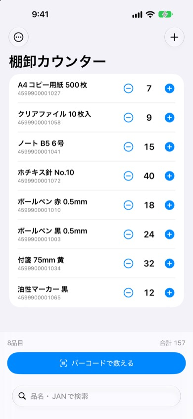
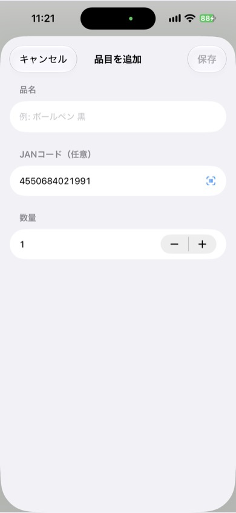

棚卸カウンター
JANバーコードにiPhoneのカメラを向けるだけで、在庫を数えられる棚卸アプリです。小さなお店や事務所の棚卸を、スマホひとつで終わらせられます。
iPhone（iOS 17以降）・アカウント登録不要


できること
- バーコードで数える：登録済みの商品はJANバーコードを読み取るだけで＋1。未登録の商品はその場で品名を入れて登録できます。
- 手でも数えられる：バーコードのない商品は、一覧の＋／−ボタンで数えます。品名やJANコードで検索もできます。
- 外付けスキャナに対応：キーボードとして動くBluetoothバーコードスキャナが使えます。
- 次の棚卸もすぐ：品目を残したまま、数量だけを0に戻せます。
- CSVで書き出し（プロ版）：JANコード・品名・数量・最終更新日時をCSVで書き出し。Excelで開いても文字化けしません。
使い方
- 「バーコードで数える」を押して、商品のJANバーコードにカメラを向けます。
- 初めての商品は品名を入れて登録。2回目からは読み取るたびに数量が増えます。
- 数え終わったら、プロ版のCSV書き出しで結果をExcelやスプレッドシートに貼り付けます。
こんな方に
- 個人商店・雑貨店・文具店の月末・期末の棚卸
- 事務所の備品や消耗品の在庫確認
- イベントや催事の物販の在庫数え
料金
基本機能は無料です。CSV書き出しはプロ版（買い切り¥480）で使えます。月額料金はかかりません。
よくある質問
バーコードが読み取れません
読み取れるのはJAN（EAN-13・EAN-8）です。明るい場所で、バーコード全体が画面に入るように少し離してかざしてください。読み取れない場合は、画面下の入力欄に数字を入力しても数えられます。
「チェックデジットが合いません」と表示されます
JANの最後の1桁は、前の桁から計算される確認用の数字です。入力した番号が商品のバーコードの数字と一致しているか確認してください。
機種変更したらデータは引き継げますか
データは端末内にだけ保存されるため、自動では引き継がれません。プロ版のCSV書き出しで記録を残しておくことをおすすめします。
プロ版を購入したのにCSV書き出しが使えません
メニューの「プロ版について」から「購入を復元」を押してください。購入時と同じApple IDでサインインしている必要があります。
お問い合わせ
メール: tanacount.support@gmail.com
返信までお時間をいただく場合があります。
ほかのアプリ
補助金ウォッチ：受付中の補助金・助成金を探して、申請締切の前に通知するiPhoneアプリ
麻雀点数計算：符と翻から点数を自動計算する、卓に置いて使う麻雀の点数表示アプリ